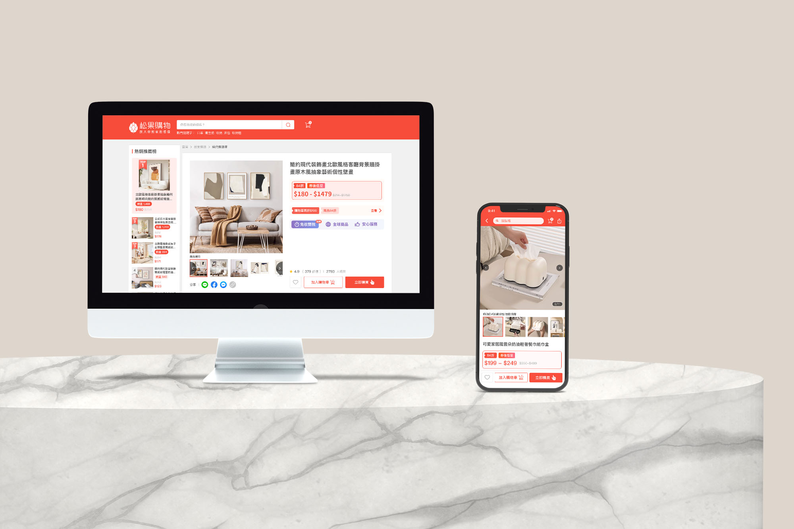
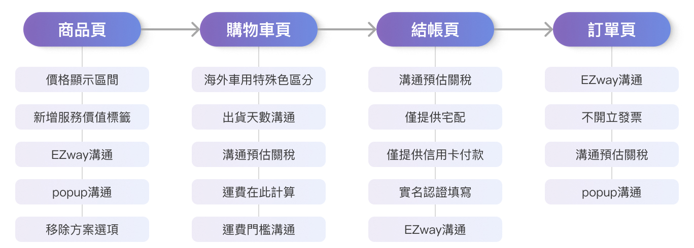
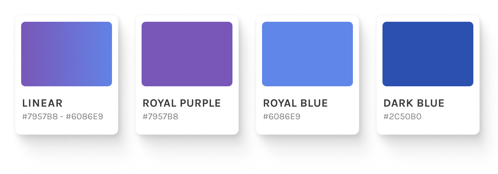
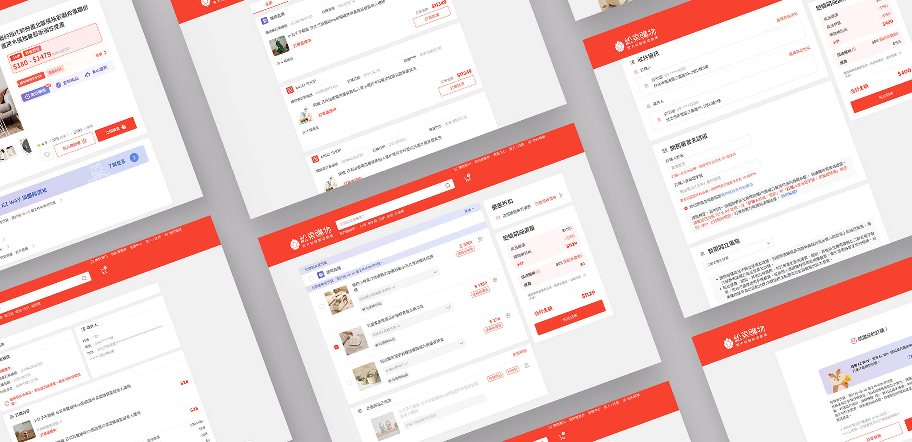
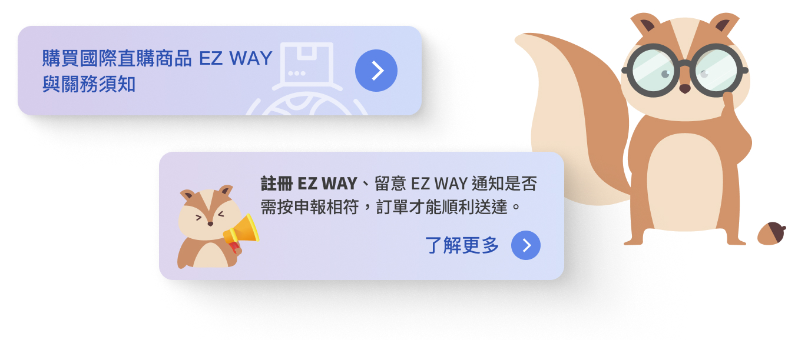
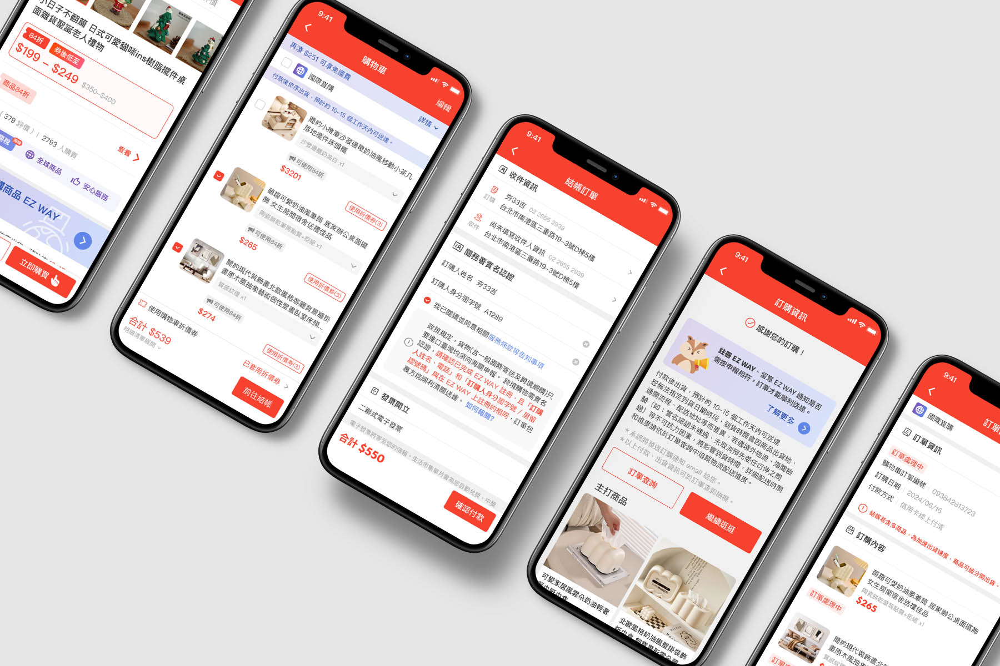

在松果購物平台上從零建立海外商品服務——重新設計購物流程、建立專屬視覺語言， 並透過各頁面溝通策略引導使用者順利完成跨境購物體驗。

松果購物計劃在既有平台上導入全新的海外商品服務——「國際直購」。 這項服務讓使用者能夠直接在松果購物購買海外商品，不需另開瀏覽器或跳轉到其他平台。
然而，海外商品的商品結構、金流流程與現有商品有本質上的差異；加上跨境購物涉及海關申報的法規要求， 整體購物流程需要從頭規劃，而非僅套用現有模板。
核心挑戰：在不對現有網站架構造成過大變動的前提下，導入完整的海外商品服務，並建立能夠與平台原有視覺區隔的獨立品牌感。
這個專案的切入點不是「畫面」，而是先把整體服務的頁面規劃釐清——哪些頁面要新增、哪些要修改、哪些可以沿用。 確定邊界後，再依序處理視覺語言、溝通策略與互動細節。
首先梳理整體服務需要哪些頁面，哪些是全新建立、哪些是在現有頁面上擴充， 確保開發成本可控，也讓各角色對於工作範圍有共同認知。

整體頁面規劃——標記新增、修改與沿用頁面範圍
色彩上選擇藍紫色作為國際直購服務的專屬主色，與平台原有紅色形成明確對比。 藍紫色傳遞出創新、信任與高端感，搭配漸層增添視覺層次，幫助使用者在視覺上快速辨識這是不同類型的服務。

藍紫色系配色方案——與平台紅色主色形成視覺區隔

國際直購服務頁面設計稿
跨境購物有個硬門檻：使用者必須下載 EZway App 並完成實名申報，才能讓商品順利通關。 這對多數平台使用者來說是完全陌生的流程，若在購買完成後才告知，容易造成客訴與棄單。
因此設計重點不只是「告知使用者要下載 EZway」，而是思考在哪些頁面、哪個時機點插入溝通， 讓使用者在購買意願形成前就已建立認知，避免在結帳流程末端才遇到阻力。

各頁面 EZway 溝通時機與訊息設計
互動原型展示——完整購物流程走過一遍
海外商品的規格結構往往比國內商品更複雜，顏色、尺寸、材質可能同時並存。 若直接沿用現有的 pre-select 元件，使用者很容易選錯規格，導致退換貨問題。

整體設計成果展示